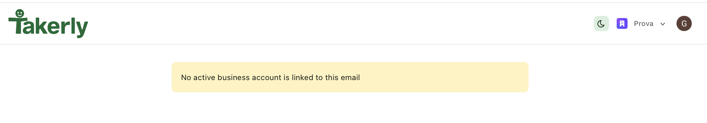

Indice
Metodo di analisi
Il sito è analizzato sezione per sezione, seguendo il percorso di chi lo visita per la prima volta.
Ogni sezione ha una panoramica, con ciò che funziona e alcuni approfondimenti che aprono i punti da migliorare, ciascuno con la sua direzione di intervento.
I temi che tornano in tutto il sito, come il tono di voce e la leggibilità, sono raccolti in slide dedicate.
L'analisi è condotta sulla versione desktop del sito. Comportamento su mobile, prestazioni di caricamento e posizionamento sui motori di ricerca non rientrano in questa prima analisi.
Come è organizzato il sito
Le sezioni nell'ordine reale della pagina. I fili collegano contenuti che parlano dello stesso tema ma stanno in punti lontani.
L'impianto a pagina unica funziona: il racconto scorre tutto in una schermata, tuttavia:
- •alcuni temi sono distribuiti invece di essere raccolti: l'elettrico compare in apertura, nei mezzi e nel prossimo passo, senza un racconto unico;
- •i numeri, la vostra prova, stanno in fondo, staccati dalle persone e dai servizi che dovrebbero rafforzare.
Riordinare l'architettura: raccogliere ogni tema in un punto solo e avvicinare la prova a ciò che deve dimostrare.
Il menu
Il menu è soprattutto una navigazione interna alla pagina unica, più che l'accesso a sezioni distinte: di per sé una scelta legittima. Per ora funziona, ma quando il sito crescerà o servirà aggiungere nuove sezioni, quello spazio potrà essere più utile se dedicato ad altro.

L'etichetta della sezione non corrisponde
La voce "Servizi" porta a una sezione introdotta dall'etichetta "Cosa puoi fare oggi"; la parola "Servizi" resta solo nel titolo grande. Nelle altre sezioni quell'etichetta ripete la voce del menu, qui no: chi clicca non ritrova subito il nome che ha scelto e resta senza conferma immediata di essere arrivato.
Riportare "Servizi" anche nell'etichetta della sezione, come avviene per Visione, Taker o Contatti.
Voce vuota
La voce è cliccabile, ma nella pagina non esiste una sezione "Come funziona": chi la sceglie, spesso con l'intenzione concreta di capire come attivare il servizio, non arriva da nessuna parte.
Creare il contenuto mancante, oppure rimuovere la voce.
In ordine invertito rispetto alla pagina
Nel menu "Mezzi" viene prima di "Taker", ma scorrendo la pagina l'ordine è opposto: prima le persone, poi i mezzi. Chi usa il menu come indice trova un ordine diverso da quello che poi incontra.
Allineare l'ordine del menu a quello reale delle sezioni.
Apre una sezione con un altro nome
La voce "Battery swap" apre una sezione intitolata "Prossimo passo": il nome del menu non compare a destinazione, e chi clicca non ha conferma di essere arrivato dove voleva.
Allineare il nome della voce alla sezione a cui porta.
Landing page

Overview
La prima schermata dice subito cosa fa Takerly, ed è la sua forza. Questa chiarezza però non si trasforma in un passo netto da compiere: chi arriva non trova un'indicazione chiara su dove andare.
Due azioni affiancate, ma l'obiettivo non è chiaro
"Scopri la rete Takerly" e "Area business" sono due azioni diverse, affiancate una all'altra, ma non è chiaro a cosa portino né a chi si rivolga ciascuna: una invita a esplorare, l'altra apre un accesso pensato per un altro pubblico. La domanda da sciogliere è: qual è l'azione che volete far compiere a chi arriva? E un secondo pulsante la rafforza, o distrae dall'unica cosa che conta?
Valutare se affiancare le due azioni sia il modo giusto di presentarle; se lo è, riformulare entrambi i pulsanti così che sia chiaro anche a cosa portano.
Nei primi secondi il valore non arriva con forza
L'apertura è lo spazio più prezioso della pagina: chi arriva decide qui se restare. L'attenzione si cattura in apertura o non si cattura più. Per questo il testo dovrebbe essere la prima cosa a convincere, immediato e capace di attrarre, più che descrittivo o tecnico. Oggi il 100% elettrico, uno dei vostri differenziatori più forti, resta invece una piccola etichetta sotto i pulsanti: il vantaggio più forte che avete, trattato come un dettaglio proprio dove conterebbe di più.
Aprire con un messaggio breve e accattivante, meno tecnico, che dica subito il valore per chi vi sceglie, dando al 100% elettrico il peso di un differenziatore già in apertura.
Due messaggi che si contraddicono
Sulla mappa convivono "Rete in costruzione" e "Milano, tratte attive": uno dice che non siete ancora pronti, l'altro che siete operativi. Il dubbio che ne nasce (siete attivi o no?) indebolisce proprio l'elemento più d'impatto della pagina.
Chiarire lo stato in un messaggio solo: operativi a Milano e in crescita, non "non ancora pronti".
Visione
Overview
Rappresentare la rete come una mappa è un'idea forte e riconoscibile, soprattutto in questa sezione, dove chi legge deve capire davvero il servizio. Questa scelta è però da rafforzare e valorizzare con un racconto che la spieghi in modo immediato e che la valorizzi.
Racconta l'azienda, non il vantaggio per il cliente
Il testo descrive cosa sta costruendo Takerly, in modo ampio e astratto, e parla soprattutto di sé: della propria rete, della propria visione. Non dice a chi legge la cosa che conta, cioè cosa ottiene concretamente e perché dovrebbe scegliere questo servizio. È il punto in cui il valore dovrebbe essere già chiaro, invece resta sullo sfondo. Chi arriva fin qui dovrebbe capire perché Takerly fa al caso suo.
Costruire attorno alla mappa un racconto immediato, dal punto di vista del cliente: cosa ottiene e perché conviene. Una soluzione potrebbe essere anche rendere la mappa interattiva, così è lei stessa a spiegare il servizio mentre la si esplora.
Le linee hanno un nome, non un significato
Nella Visione la mappa ha una legenda: retail, flower, food & bakery, fashion, eventi, trasporti dedicati. Una chiave di lettura quindi c'è, ma resta astratta: non si capisce se siano tratte davvero attive in città, categorie di clienti che servite o un modo elegante di illustrare la rete. In apertura, poi, la stessa mappa compare senza legenda, e al primo incontro, quello che conta di più, non dice nulla. Un'immagine così centrale incuriosisce, ma lascia chi guarda senza sapere cosa sta guardando.
Decidere cosa rappresentano le linee e renderlo esplicito, che siano tratte operative, categorie di servizio o una metafora della rete, e portare la stessa legenda già alla prima comparsa della mappa in apertura.
Servizi

Overview
I quattro servizi coprono bisogni reali e distinti, e la sezione è ordinata. La base è solida. Ma informa senza guidare, proprio nel punto in cui il cliente dovrebbe capire qual è il servizio giusto per sé.
Quattro servizi, due domande diverse
I quattro servizi non stanno sullo stesso piano, perché non rispondono alla stessa domanda. Consegne programmate ed Express distinguono il tipo di consegna, per tempi e urgenza. Logistica dedicata e Trasporti personalizzati rispondono a un'altra domanda, come si vuole lavorare con Takerly: un rapporto continuativo o una missione su misura. Due criteri diversi, affiancati come se fossero quattro opzioni dello stesso tipo. Chi arriva con un bisogno preciso deve prima capire con che logica sono divisi, e ci si perde proprio mentre sceglie.
Elenca cosa fa, non cosa ottieni
Ogni servizio è descritto con una lista di voci operative: "priorità operativa", "presa rapida", "gestione ordinata dei ritiri". Sono cose che fa Takerly, non cose che il cliente porta a casa. Manca la traduzione in vantaggio: cosa cambia davvero, per chi ordina, a scegliere questo servizio invece di un corriere qualunque.
Riscrivere le voci dal lato del cliente, trasformando ogni funzione nel risultato che produce: da "fasce orarie concordate" a "le consegne arrivano quando servono alla tua attività".
Il servizio è chiaro, l'azione no
Anche quando il cliente ha individuato il servizio giusto, la sezione non gli dà modo di agire: nessun passo per attivarlo, nessuna azione legata al singolo servizio. Chi è convinto arriva fin qui e si ferma, perché il gesto successivo non c'è.
Dare a ciascun servizio un'azione propria e immediata (richiedi, attiva, parla con noi), così l'interesse diventa contatto.
Taker e mezzi 100% elettrici
Overview
È il tratto in cui il sito mostra cosa distingue Takerly: le persone che fanno il servizio e i mezzi elettrici con cui lo fanno, presentati uno dopo l'altro. Per un servizio che si vende sulla relazione e sulla sostenibilità è la leva giusta, ed è qui che convince di più. Restano però alcuni passaggi che ne trattengono l'effetto.
La spiegazione arriva, ma troppo tardi
La parola "Taker" compare già nel menu, in cima al sito, e torna nell'apertura, prima che nessuno l'abbia spiegata. Una definizione poi c'è, ma solo più in basso, dentro questa sezione, dove i Taker vengono descritti come le persone che fanno il servizio. Chi legge dall'alto incontra più volte un nome che identifica il vostro servizio senza sapere cosa indichi, e deve arrivare fin qui per scoprirlo. Il termine che vi distingue viaggia per mezza pagina affidato all'intuito di chi legge.
Aggiungere una definizione breve e diretta la prima volta che il termine compare, così il nome è chiaro fin da subito e non solo a metà pagina.
L'elettrico è una caratteristica, non ancora un vantaggio
Il 100% elettrico è uno dei vostri differenziatori più forti, ma qui è raccontato come una caratteristica tecnica ("agili, silenziosi, adatti alla logistica urbana") senza dire cosa fa guadagnare a chi ordina. In più, le informazioni sui mezzi sono sparse in più punti del sito invece di essere raccolte in un racconto unico. Il vantaggio competitivo c'è, ma resta implicito proprio dove dovrebbe vendersi.
Dire già qui cosa l'elettrico fa guadagnare a chi ordina, e ricondurre a un racconto unico le informazioni sui mezzi ora sparse.
Al culmine della fiducia manca un invito
Questa è la sezione in cui chi legge è più convinto. Ed è proprio qui che il sito non offre un passo da compiere: nessun invito ad agire, nessun collegamento al contatto. Il momento di massima fiducia si esaurisce senza trasformarsi in azione.
Inserire un invito ad agire al culmine della fiducia, che porti dritto al contatto.
Operatività reale
Overview
È la sezione con le prove più solide del sito: i numeri di attività e le foto di consegne reali. Il contenuto è valido, è la disposizione a penalizzarlo: arrivano in fondo alla pagina, senza un filo che le tenga insieme, e in parte riprendono cose già dette. Con qualche accorgimento potrebbero pesare molto di più.
La prova più forte, messa dove pesa meno
I numeri (50.000+ km percorsi, 10.000+ task completate) e le foto dei casi reali sono la prova più concreta che il sito abbia, ma arrivano isolati in fondo alla pagina, lontano dalle affermazioni che potrebbero sostenere.
Avvicinare i numeri alle affermazioni che rafforzano, così la prova lavora nel punto giusto invece di restare a sé.
Etichette con criteri diversi
"Linea flower" e "Linea fashion" classificano per tipo di servizio, mentre "Allestimento isotermico" classifica per equipaggiamento del mezzo: sono due criteri diversi presentati come se fossero la stessa cosa.
Adottare un criterio unico e coerente per etichettare le immagini.
Battery swap

Overview
Qui il sito guarda al futuro: il battery swap e l'energia come parte dell'infrastruttura raccontano dove volete arrivare. La visione è un punto di forza, e quanto pesa davvero dipende da come la raccontate a chi vi deve scegliere.
Una promessa al futuro presentata come presente
Il titolo "Una flotta sempre operativa" e il testo "sempre disponibile" sono al presente, ma la sezione si smentisce subito: l'obiettivo è integrare il battery swap, con "zero downtime come obiettivo". È un traguardo, non ciò che accade oggi. Poche sezioni prima i numeri dimostrano che siete già operativi; qui invece mettete in evidenza ciò che ancora non c'è.
Presentare la sezione come visione: portare titolo e testo al futuro, ad esempio "il nostro prossimo passo", senza dare per presente ciò che è ancora un obiettivo.
Il futuro raccontato con parole da investitori
L'idea del battery swap e dell'energia come infrastruttura dà respiro al progetto e merita spazio. Oggi però è espressa in un linguaggio tecnico, che parla di sistemi e obiettivi più che di cosa cambia per chi vi affida una consegna. Su una pagina che deve convincere il cliente, l'ambizione arriva come una nota per addetti ai lavori, non come un vantaggio.
Tradurre questa visione in cosa significa per il cliente, un beneficio concreto e desiderabile, con un tono più aspirazionale che tecnico.
Contatti e Footer

Overview
La sezione permette di mettersi in contatto: "Richiedi una consegna" apre subito WhatsApp. Tuttavia, tutto passa da un unico canale, e non dichiarato: chi preferisce scrivere una mail o chiamare trova l'indirizzo relegato nel footer, mentre il numero di telefono non è scritto da nessuna parte. Il contatto c'è, ma lascia poca libertà all'utente.
Due pulsanti che sembrano alternative, ma non lo sono
"Richiedi una consegna" e "Area business" sono affiancati come se fossero due scelte dello stesso tipo, ma portano a cose diverse: una avvia subito un contatto, l'altra apre un accesso riservato. Chi legge non capisce se deve scegliere tra le due o se una sola lo riguarda.
Come negli altri punti in cui ricompare "Area business", valutare se serva davvero anche qui: decidere quali CTA tenere per inquadrare con chiarezza questo momento di contatto.
Nel footer ci sono dati mancanti
Nel footer i link "Privacy policy" e "Cookie policy" non portano a nessuna pagina. Accanto a questi mancano anche i dati che identificano l'azienda, come ragione sociale e partita IVA.
Pubblicare le pagine Privacy e Cookie e collegarle ai link, e aggiungere nel footer i dati identificativi dell'azienda.
Accesso e Area business

Overview
Tre voci diverse del sito, accesso, registrazione e area business, portano tutte alla stessa schermata di login, senza distinzione tra chi vuole solo accedere e chi vuole scoprire l'offerta business. E chi supera il login trova un'area ancora in fase di prova, con opzioni pensate per sviluppatori e non per il pubblico reale di Takerly.
Tre percorsi diversi portano tutti allo stesso posto
"Sign in", "Sign up", la voce "Business" del menu e i pulsanti "Area business" nella pagina sono ingressi diversi, con aspettative diverse, ma portano sempre alla stessa identica schermata di accesso. Chi preme "Area business" si aspetta di vedere cosa offre quell'area, i pacchetti, le condizioni, non un login. Quattro etichette diverse per un'unica destinazione.
Mostrare cosa offre l'area prima di chiedere l'accesso, e ridurre gli ingressi a percorsi distinti per esigenze distinte.
Un'area lasciata a metà
Già prima del login qualcosa non torna: il pulsante "Area business", da una pagina pubblica, rimanda a una destinazione riservata allo sviluppo del sito, che sul dispositivo di un cliente non apre nulla. Superato il login, la conferma: in fondo alla pagina compare la scritta "Development mode", segno che questa parte del sito non è mai uscita dalla fase di prova. Le opzioni di accesso rapido, GitHub e Microsoft, sono strumenti da sviluppatori, senza senso per chi gestisce un negozio o un'attività locale. Al posto di un'area riservata ai clienti, chi entra trova un ambiente di sviluppo.

Portare l'area fuori dalla modalità di prova e offrire accessi coerenti col pubblico reale.
Tutta la pagina cambia lingua
L'intera schermata è in inglese, "Sign in to Takerly", "Continue", "Don't have an account?", mentre il resto del sito è in italiano. È la stessa incoerenza già vista nei pulsanti "Sign in / Sign up" del menu, qui estesa a tutta la pagina. Nel punto in cui un cliente italiano dovrebbe fidarsi e registrarsi, il sito gli parla in un'altra lingua.
Usare una lingua coerente in tutte le pagine del sito.
Aspetti trasversali
Alcuni aspetti non dipendono da una singola sezione, ma riguardano tutto il sito.
Note di dettaglio
Dettagli minori, singolarmente trascurabili, che però sommati incidono sulla percezione di cura del sito.
L'etichetta "Logistica urbana elettrica a Milano" ha la stessa forma a pillola dei pulsanti: sembra qualcosa su cui cliccare, ma non lo è, e rende meno chiaro cosa si possa davvero premere.
Il riferimento a Milano si ripete ravvicinato in apertura, tra etichetta e pillola, e torna più in basso nella pagina: la stessa informazione compare più volte, con parole ogni volta diverse.
Sul pulsante "Scopri la rete Takerly" la coda della "y" viene tagliata, anche a schermo pieno: un dettaglio piccolo, ma su un pulsante primario in apertura si nota.
I pulsanti non seguono una regola sulle icone: alcuni ne hanno una, altri no, anche quando sono affiancati (per esempio "Scopri la rete Takerly" con icona e "Area business" senza).
La mappa, con il piccolo comando in alto a destra, lascia intendere un'interazione che non c'è: dà l'idea di essere cliccabile, ma resta un'immagine statica.
Il selettore chiaro/scuro in alto a destra è un elemento generico da modello predefinito: su un sito come questo non aggiunge nulla e fa sembrare l'interfaccia assemblata da un template più che progettata.
Quadro d'insieme
Il potenziale c'è, identità chiara e operatività reale. A trattenerlo sono tre nodi che tornano su tutto il sito.
Parla di sé, non del cliente
Il sito racconta cosa fate e costruite più di cosa ottiene chi legge. Il valore c'è, ma resta troppo sullo sfondo.
Informa ma non accompagna
Spiega cosa fate, ma non il percorso per arrivarci: come si richiede una consegna, come si diventa cliente, dove porta l'area business. Le azioni sono ambigue e il contatto arriva solo alla fine.
Mostra ciò che non è ancora pronto
Diverse parti sono in anticipo sul loro stato: l'area business apre su un ambiente di prova, "una flotta sempre operativa" è un obiettivo, la mappa promette una rete ancora da leggere. Si vede il cantiere.
Il prossimo passo sarà decidere la struttura a monte: riordinare quello che c'è già e capire cosa servirà quando Takerly diventerà un servizio e non solo una vetrina: un'area business che funziona davvero, l'accesso dei clienti, le sezioni che oggi non esistono ancora.
Priorità
Gli stessi rilievi, ora messi in ordine di urgenza: da qui parte la proposta di intervento.